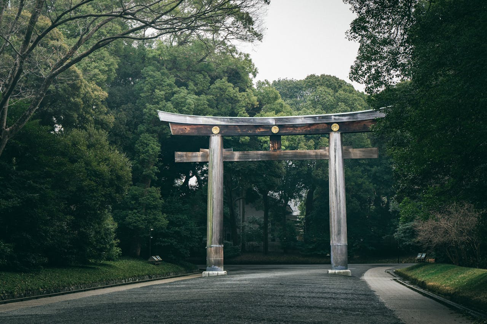

El barrio de Shibuya se ubica en la línea circular de tren Yamanote en el oeste de la Metrópolis de Tokio, un poco al sur de Shinjuku. Es un barrio principalmente comercial y de entretenimiento.
Shibuya ha conseguido una gran popularidad entre los jóvenes en los últimos 50 años. Aquí se encuentran varios centros comerciales de moda: el más famoso de ellos es el llamado Shibuya 109. Este centro comercial es muy popular entre los jóvenes, especialmente los adolescentes, y es famoso por ser el origen de la subcultura kogal Subcultura Kogal: es una variante de la subcultura Gyaru, donde las jóvenes japonesas, las Gals, se preocupan principalmente por su belleza, cuidando al detalle: su ropa, cabello, maquillaje, uñas, etc. Su contraparte masculina son los Gyaruo. .
De la mano de Japatonic nos damos una vuelta por este barrio mientras nos explica.
Cruce de Shibuya
El cruce de Shibuya, utiliza un stop en las cuatro direcciones para permitir a los peatones transitar todo el cruce. Durante los 47 segundos que los semáforos lo permiten, pueden llegar a cruzarlo tres mil personas simultáneamente.
En los edificios que se encuentran en frente están situadas grandes pantallas de televisión. La plaza que hay en frente de la estación se conoce como Plaza Hachikō.
Estatua de Hachikō
Hachikō fue un perro japonés de raza akita, recordado por haber esperado a su dueño, el profesor Hidesaburō Ueno, en la estación Shibuya, cerca de nueve años después de la muerte de este. Actualmente se lo conoce como Chūken Hachikō ‘el perro fiel Hachikō’.
La estatua de Hachikō, fue realizada por Takeshi Andō en bronce. Está instalada fuera de la estación de Shibuya.
En abril de 1934 se erigió una estatua de bronce a su imagen esculpida por Teru Andō en la estación de Shibuya, y el propio Hachikō estuvo presente en su inauguración. La estatua fue reciclada para el esfuerzo bélico durante la Segunda Guerra Mundial. En 1948 se encargó a Takeshi Andō, hijo del artista original, que hiciera esta segunda estatua.
Esta estatua es el punto de espera más popular de Tokio cuando varias personas tienen una cita.
Parque Yoyogi
El parque Yoyogies uno de los mayores parques de Tokio. Está situado junto a la Estación de Harajuku y el Santuario Meiji.
El sitio que ahora se conoce como el Parque Yoyogi fue el lugar del primer vuelo a motor de Japón, pilotado el 19 de diciembre de 1910 por el capitán Yoshitoshi Tokugawa, después de esto se convirtió en un terreno de desfiles militares. Durante la ocupación que siguió a la Segunda Guerra Mundial se convirtió en la residencia de los oficiales estadounidenses. Fue más tarde utilizado como la principal villa olímpica para los atletas de las Olimpiadas de 1964 y como el lugar de natación, saltos de trampolín y baloncesto. El edificio distintivo Gimnasio Nacional Yoyogi, que albergó las pruebas de natación, saltos de trampolín y baloncesto fue diseñado por Kenzo Tange para las olimpiadas, y todavía sigue en uso, pero la mayor parte del área norte del complejo del gimnasio y el sur del santuario Meiji se abrió al público como un parque urbano en 1967.
Hoy en día es un conocido parque de retiro, especialmente los domingos, cuando es usado como lugar de encuentro para las personas que quieren tocar música, practicar artes marciales, etc. El parque tiene un carril bici y una cancha pública de baloncesto, es posible también el alquiler de bicicletas. Como consecuencia de la duradera recesión económica japonesa hay una multitud de mendigos, silenciosa y ordenada, acampando en los alrededores del parque.
Santuario Meiji
El santuario Meiji es un santuario sintoísta dedicado a los espíritus deificados del Emperador Meiji (Mutsuhito) y su mujer, la Emperatriz Shōken. Fue fundado el 1 de noviembre de 1920, tras la muerte de este Emperador.
En el santuario se celebran varios festivales al año. Algunos festivales se celebran anualmente. Las exposiciones van desde tallas en hielo, shodoten, bonsái, obras maestras de Suiseki, muñecos de memoria, crisantemos, dalia y exposiciones en el anexo del Museo del Tesoro.